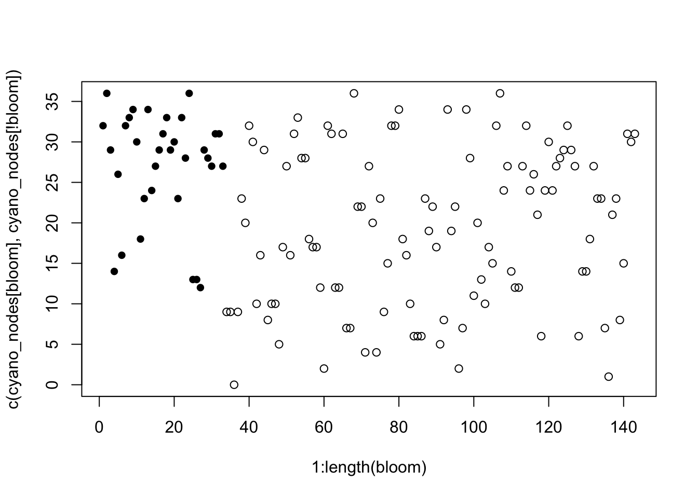
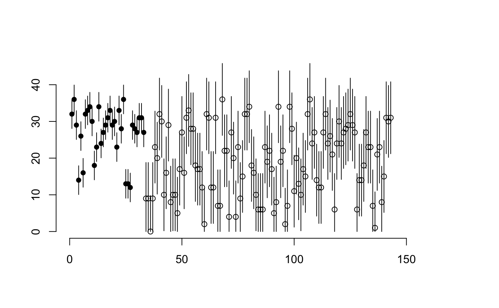

This is a really quick introduction to using the sample size calculation tools provided in breakaway. It assumes reasonable familiarity with both R and breakaway.
Download the latest version of the package from github.
### Run the first two lines at home! ####
# install.packages("devtools")
# devtools::install_github("adw96/breakaway")
library(breakaway)Let’s consider some example OTU tables, taxonomy information, and covariate information.
#my_table <- data(toy_otu_table)
#my_taxonomy <- data(toy_taxonomy)
#meta <- data(toy_metadata)Suppose we are interested in the species richness of cyanobacteria, and whether or not it changes with a cyanobacteria bloom event. (You could easily generalise this to toxin-forming genera, if that was your target of interest (Amy to @Sarah)…)
The data is probably noisy and so we may not have a strong enough signal to detect a difference in richness with bloom. The point of these tools is to help you find an estimate of how many samples you might need to detect such a difference.
First set up the species richness and bloom variables.
## Find how many otus are in the cyanobacteria genus
cyano_nodes <- apply(toy_otu_table[grepl("Cyano", toy_taxonomy), ], 2, function(x) sum(x>0))
cyano_nodes <- cyano_nodes
bloom1 <- toy_metadata[, "bloom2"]
bloom <- bloom1 == "yes"Let’s start by drawing a picture. Could a difference even be possible?
plot(1:length(bloom), c(cyano_nodes[bloom], cyano_nodes[!bloom]),
pch=c(rep(16, sum(bloom)), rep(1, sum(!bloom)))) ## Hmmm ambiguous
Fascinating! We observe much more low richnesses for non-bloom samples, but it’s really quite ambiguous.
An important consideration is that our samples are not exhaustive: each of these cyanobacteria richness values are estimated and not, in fact, correct. There almost certainly were more phyla present than we observed. Estimating the total phyla richness is a great problem for breakaway. Actually, it’s probably better for CatchAll, because there’s not that much richness (only around 20 phyla per sample). Let’s come back to estimating the total phyla richness another time and focus instead on finding the required sample size to detect a difference when there is noise.
I’m going to make a big leap now and pretend that I know that the standard deviation in the bloom richnesses is 2, and the standard deviation in non-bloom richnesses is 5. How would the above picture change? Sounds like a good problem for betta_pic
betta_pic(c(cyano_nodes[bloom], cyano_nodes[!bloom]), se = c(rep(2, sum(bloom)), rep(5, sum(!bloom))), mypch = c(rep(16, sum(bloom)), rep(1, sum(!bloom))))
Ooooo, difficult! With this picture suggest a difference? Maybe. We definitely need more samples. I wonder how many? (That’s the point of this tutorial, FYI)
Why would the standard deviation change the necessary sample size? Let’s suppose that both groups have the same standard error. How do the differences between the groups change?
## Estimates Standard Errors p-values
## 19.1 0.7657131 0
## bloom 7.9 1.5939589 0## Estimates Standard Errors p-values
## 19.1 1.672484 0.000
## bloom 7.9 3.481553 0.023## Estimates Standard Errors p-values
## 19.1 2.926847 0.000
## bloom 7.9 6.092718 0.195So larger standard errors lead to less precise estimates. Note that the estimate of the difference (in phyla richnesses) between the groups doesn’t change, but its standard error does, which changes the p-value.
Okay, let’s start by estimating the standard errors as the within group standard deviations.
sd(cyano_nodes[bloom])## [1] 6.919176sd(cyano_nodes[!bloom])## [1] 9.716108This is kind of primitive but not that bad to start.
I’d prefer to be conservative and choose a larger standard error… the maximum of both groups would suit me fine. So for my simulation I’m going to choose a standard error of 10, common to both groups. So I set se_est = 10.
Suppose that 6 more phyla is concerning, that is, a difference 6 in the of species richness is the difference I want to detect. So I set diff = 6.
For no good reason, suppose I want to test at the 5% level. alpha = 0.05.
Power of 80%? Why not?! prop = 0.8 TODO: Amy to rename this to power
I’ve got time to go make myself a coffee, and I care a lot about precision, so I will set samples = 500. Only have time for a sneeze? Set samples = 100. Big boozy lunch? samples = 2000. Scales linearly. It’s pretty fast! (No thanks to me…)
## Power at a sample size of 5: 26.4%
## Power at a sample size of 6: 31.2%
## Power at a sample size of 7: 32.8%
## Power at a sample size of 8: 39.6%
## Power at a sample size of 9: 43.8%
## Power at a sample size of 10: 49.2%
## Power at a sample size of 11: 46.8%
## Power at a sample size of 12: 54.8%
## Power at a sample size of 13: 48.6%
## Power at a sample size of 14: 58.4%
## Power at a sample size of 15: 57%
## Power at a sample size of 16: 59.8%
## Power at a sample size of 17: 58.4%
## Power at a sample size of 18: 63%
## Power at a sample size of 19: 63.2%
## Power at a sample size of 20: 65.8%
## Power at a sample size of 21: 66.6%
## Power at a sample size of 22: 69.4%
## Power at a sample size of 23: 76%
## Power at a sample size of 24: 74.4%
## Power at a sample size of 25: 73%
## Power at a sample size of 26: 75.4%
## Power at a sample size of 27: 78.8%
## Power at a sample size of 28: 79.4%
## Power at a sample size of 29: 79.8%
## Power at a sample size of 30: 80.2%
## Sample size needed: 30
## Note: This is number of subjects *per group* i.e. 30 from the control group and 30 from the test group. It should be considered a lower bound at best! Please consult Amy with any questions.Wooohooo! 30 bloom and 30 non-bloom samples are needed. As an estimate!
Is almost certainly possible to find a closed form expression for this. What is implemented here is a really, really primitive way of doing it. I will come back to the math approach ASAP. (Sorry, I have a thesis to write!)